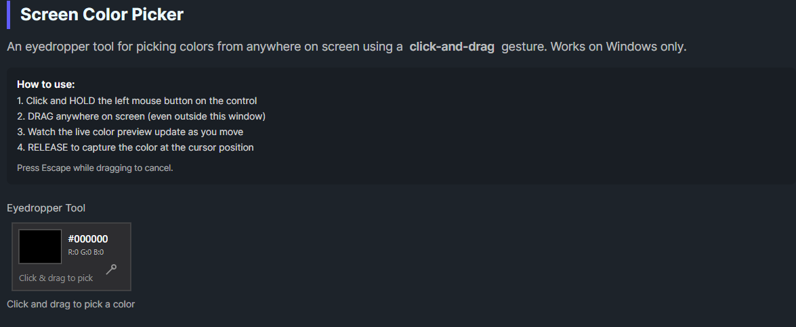

DaisyScreenColorPicker is an eyedropper tool that allows picking colors from anywhere on the screen using a click-and-drag interaction. Unlike traditional color pickers that require clicking to start and clicking again to select, this control uses a more intuitive drag gesture: click and hold to start, drag anywhere on screen while watching the live color preview, then release to capture the color.
1. Click and hold the left mouse button on the control
2. Drag the cursor anywhere on screen (even outside the application window)
3. Watch the live color preview update as you move
4. Release the mouse button to capture the color at the cursor position
This interaction model is similar to how eyedropper tools work in professional design software like Photoshop or Figma.
Cancellation:| Property | Type | Default | Description |
|---|---|---|---|
Color |
Color |
Black |
The selected/captured color |
IsCapturing |
bool |
false |
Whether the picker is currently in drag-capture mode (read-only) |
OnColorChanged |
Action |
null |
Optional callback when a color is captured |
| Event | Description |
|---|---|
ColorChanged |
Fired when a color is successfully captured (on mouse release) |
PickingCompleted |
Fired when picking is completed successfully |
PickingCancelled |
Fired when picking is cancelled (Escape or capture lost) |
The control displays a compact panel (140×80 pixels) showing:
| Platform | Support |
|---|---|
| Windows | ✅ Full support using GDI32 GetPixel API |
| macOS | ⚠️ Limited - drag works but color capture may not function |
| Linux | ⚠️ Limited - drag works but color capture may not function |
The control uses Windows-specific P/Invoke calls (GetCursorPos, GetDC, GetPixel) for screen color capture. On non-Windows platforms, the drag interaction works but the color value won't update.
<!-- Basic eyedropper -->
<colorpicker:DaisyScreenColorPicker
Color="{Binding SelectedColor, Mode=TwoWay}" />
<!-- With callback -->
<colorpicker:DaisyScreenColorPicker
OnColorChanged="{Binding OnScreenColorPicked}" />
<!-- In a color picker toolbar -->
<StackPanel Orientation="Horizontal" Spacing="8">
<colorpicker:DaisyScreenColorPicker x:Name="Eyedropper" />
<TextBlock Text="Drag to pick a color from screen"
VerticalAlignment="Center"
Opacity="0.7" />
</StackPanel>picker.ColorChanged += (sender, e) =>
{
Console.WriteLine($"Captured: {e.Color}");
// e.Color contains the picked color
};
picker.PickingCompleted += (sender, e) =>
{
Console.WriteLine("Color picking finished");
// Good place to close dialogs or apply the color
};
picker.PickingCancelled += (sender, e) =>
{
Console.WriteLine("Color picking cancelled");
// User cancelled - restore previous state if needed
};var picker = new DaisyScreenColorPicker
{
OnColorChanged = color =>
{
Debug.WriteLine($"Picked: #{color.R:X2}{color.G:X2}{color.B:X2}");
SelectedColor = color;
}
};// Create picker
var picker = new DaisyScreenColorPicker();
// Handle successful pick
picker.ColorChanged += (s, e) =>
{
var capturedColor = e.Color;
ApplyColor(capturedColor);
};
// Handle cancellation
picker.PickingCancelled += (s, e) =>
{
// User cancelled - no action needed
};
// Read the current color
Color currentColor = picker.Color;DaisyColorEditor or DaisyColorGrid for a complete color picker interfaceIsCapturing property can be used to conditionally show/hide UI elementsPickingCompleted event to trigger actions after successful color selection| Traditional | DaisyScreenColorPicker |
|---|---|
| Click to start, click to select | Click-hold-drag-release |
| Two separate click actions | Single continuous gesture |
| May show floating preview window | Inline preview in control |
| Can accidentally click wrong spot | Release when you see the right color |
This control is part of the Flowery.Uno color picker suite, inspired by the Cyotek ColorPicker library (MIT License).